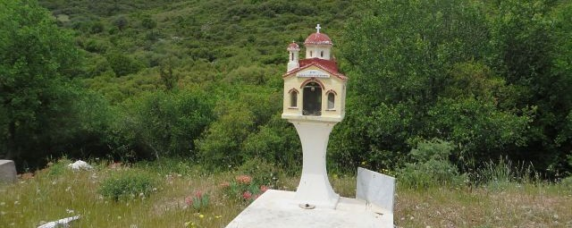

Ikonostasie
Langs de wegen van Kos zie je vaak kleine huisjes staan, ongeveer zo groot als vogelhuisjes. Deze worden Ikonostasie-kapelletjes genoemd en kom je overal in Griekenland en Zuid-Europa tegen.
Ze zijn geplaatst door families als herdenkingsplek voor familieleden die bij een verkeersongeval omkwamen. Soms staat er ook een foto van de overledene bij.